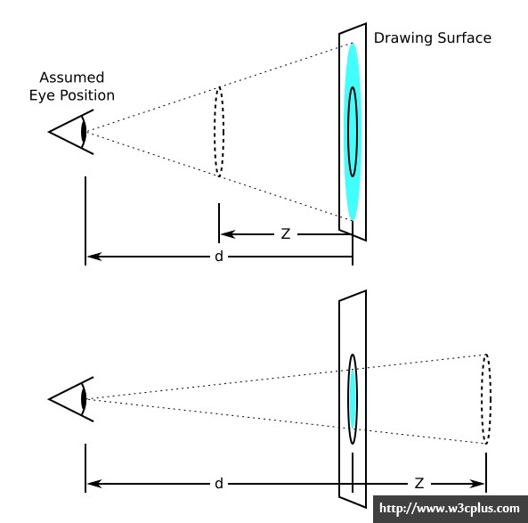

impress.js调研报告
impress.js调研报告
by tianyn1990
在开始阅读本文之前，你至少应该打开官网的例子看看，并且下载代码到本地跑跑 :-)
在阅读过程中，强烈建议阅读的同时不断查看源码，不断对照官网提供的例子
一、命名
根据页面结构：
body --
|
div#impress --
|
div.step
为了方便理解，我们约定：
| 文中简称 | 对应节点 |
|---|---|
| 「PPT」 | <div id=impress> |
| 「Page」 | <div class=“step”> |
二、什么是&相关项目&知识
1、impress.js简介
2、相关项目
官方总结的相关项目和例子在这里。包含：工具、插件、demo等。比如：
除此之外还有很多…
3、需要提前了解
三、如何使用
唯一限制你的是想象力
1、页面元素
各元素介绍
body：在不同状态下有不同的class属性值
- 浏览器兼容：class=‘impress-enabled’
- 浏览器不兼容：class=‘impress-not-supported’，如果在初始状态下就赋该值，可以使禁止了js的客户端用户仍可以看到有意义的信息
- 当页面进入到某个「Page」（指演示文稿的一页，body>#impress>.step），如果该「Page」有id=‘p1’，那么body上会生成class=’impress-on-p1‘。不同的class代表了不同的「状态」，这样我们可以非常方便的控制每个「Page」下的样式。另外，如果某个Page没有设置id，那么对应body上class为：impress-on-step-「Page的序号，从1开始」
body>#impress
- 下文称div#impress为「PPT」，「PPT」为impress.js的核心，所有的「Page」（class=‘step’）都放在它里面
- id值当然是可配置的（默认”impress”）：
impress('id').init() - 可选属性：data-transition-duration=“1000”，表示页面切换动画用时1000ms（默认1000ms）
- 可选属性：data-perspective=“1000”（默认1000像素），表示perspective（我一般理解为视距，即人眼离画布的距离）值为1000px，用来表现3D效果。如果不希望使用3D可设值为0
body>#impress>.step（简称「Page」）
- 所有#impress的子元素都必须设置class=‘step’
- 文中所说的「Page」均指的是「#impress元素」下的「.step元素」，每个「Page」均表示演示文稿中的一页
- 通过在该节点上配置各种属性，我们就可以得到一个具有不同大小、位置、3D切换效果的演示文稿了，这些配置有 重点：
- data-x，data-y：如果将整个页面比作一个巨大的画布，那么我们需要确定每一个Page在这张画布上的具体位置。这两个属性指明了Page的「中心」的x,y坐标。注意：值可以是负的
- data-scale：该属性表示Page的「缩放倍数」，设置了该属性的Page大小是「标准」（step上设置的width,height）的N倍，也就是长宽属性是标准Page的N倍。在画布上所占面积也当然有所不同。注意：值可以为小数，表示缩小
- data-rotate：相当于为Page设置了样式transform:rotate(**deg)，表示对Page进行了旋转。该属性的值为角度数，当然可以为负值
- data-z：「页面终于酷炫起来了」 Page终于被赋予了3D属性。通过沿着z轴移动，拉近/远离了屏幕，相当于样式transform:translateZ(**px)，再结合#impress上的data-perspective，最终产生3D效果╮(╯_╰)╭
- data-rotate-x，data-rotate-y：不仅距离上可以对Page进行3D移动，还可以将Page进行x,y轴向的旋转操作，另外z轴的旋转就是前面的data-rotate。记：分别从上、左、正面看一个物体，顺时针方向就分别是y轴、x轴、z轴旋转的「正方向」
- 做个总结吧：
data-x,data-y,data-z：定义了Page的中心在三维空间的位置data-rotate-x,data-rotate-y,data-rotate-z,data-rotate：定义了Page沿x/y/z轴的旋转角度，「data-rotate-z」与「data-rotate」完全一致data-scale：定义了Page的缩放倍数，值为小数表示缩小
预览功能：impress.js并没有直接提供「预览所有Page」的功能，但我们可以通过新建一个Page并设置特殊的属性值，很容易的实现。步骤如下：
- 增加一个Page，设置id=overview（当然别的也可以）
- 计算「整个画布」所有Page在一起大概的宽高值（在排列各个Page的大小位置的时候，你最好画个草图），假设为：约6000px * 约3000px
- 设置Page#overview的属性：data-x=3000,data-y=1500，也就是把#overview这个Page放到画布中央
- 找一个合适的放大倍数，将#overview这个Page的大小覆盖到整个画布，假设没有缩放的Page宽高为900px,700px，你可以大概放大10倍：data-scale=10
- 设置#overview相应的样式（详见下文），如：.impress-on-overview{ display: none } 等（因为我们不希望#overview遮盖到其他的Page）
- 这样，当访问到#overview这个「Page」的时候，就可以预览到整个画布（PPT）了
2、不同状态下页面元素分析：
状态1：静态页面
- body.impress-not-supported
<body class="impress-not-supported">
- 「PPT」div#impress
<div id="impress">
- 「Page」div.step
<div class="step" data-x="0" data-y="0"...>
状态2：浏览器加载页面
浏览器执行代码：impress().init(); 之后，如果浏览器支持impressJs，那么：
- body的class增加「.impress-supported」与「.impress-enabled」，并删除「.impress-not-supported」
- #impress的所有子节点「所有Page」，会被一个div包裹，页面结构变为：body>#impress>div>.step
- 根据我们在「PPT」「Page」上设置的各种属性值（以及Page的width&height属性，页面的宽高等），计算得出一些样式（后面详述），分别赋值到body、#impress（PPT）、.step（Page）上
- 框架会默认跳转到第一个Page：
- 根据第一个Page的id值，假设为
p1，修改地址栏哈希值为：/p1，如果Page没有id属性，那么根据页面顺序，地址栏哈希值为：/step-1 - 所有Page（.step）增加class：「.future」
- 第一个Page（.step）增加class：「.active」表示为展示中状态，500ms（默认500ms，可由#impress上的data-transition-duration属性修改）之后，「.future」变为「.present」
- 根据第一个Page的id值，假设为
状态3：访问下一个Page
当用户点击空格或者方向键（右/下）之后，进入下一个Page（#impress .step:nth-child(2)）。
当访问到第二个Page之后，第一个Page的class「.present」变为「.past」，并删除「.active」。
第二个Page的class先增加「.active」，500ms后，class「.future 或者 .past」变为「.present」，并且地址栏哈希值变为第二个Page的id值或者/step-2，
.future->.present->.past
future：未曾访问过的Page
present：正在访问的Page（同时该页面还会有class「.active」）
past：访问过的Page（只要曾经访问过，那么就是.past，当第二遍浏览到某个Page时，那么该Page的class为「.past,.active」）
另外，当页面切换时，「.active」会立即生效，但「.future/.past -> .present」会在500ms后发生切换
3、自定义css
「来自impress-demo.css中的注释，其实直接看这个文件也许更清楚」
Impress.js不调用任何外部的样式文件，JS会生成「动画所需」的所有样式。 官方提供的impress-demo.css样式文件是为了演示用的，阅读它可以明白如何对impress.js中的元素进行渲染。具体内容如下：
页面级
你喜欢的reset和global样式
「.fallback-message」：若浏览器不兼容impress.js则展示此部分内容 同时需要声明：（浏览器支持impress.js时隐藏）
.impress-supported .fallback-message {
display: none;
}
.fallback-message {
/* 不兼容时的样式 */
}
Page级
- 「.step」：需要指定width，该宽度会用于代入公式进行计算， 影响「Page看起来的大小」的因素有：#impress上缩放比例(scale)、.step宽高值(width)、3D透视属性（perspective,translateZ）等（下文会详述）
.step {
position: relative;
width: 900px;
height: 600px;
/* etc.. */
}
- 「.impress-enabled .step」-非当前Page的样式，参考：
.impress-enabled .step {
margin: 0;
opacity: 0.3;
transition: opacity 1s; /* prefix */
}
- 「.impress-enabled .step.active」-当前Page样式：
/* 当前Page */
.impress-enabled .step.active { opacity: 1 }
单张Page
（使用「Page的id属性」或者「body上的class的impress-on-**」区分作用域）
- 修改Page大小，修改样式：width,transform:translateZ
- Page上class可能取值：「.future」「.present」「.past」「.active」：（静态页面上class=‘step’）
- Page未曾被访问过，class为： 「step future」
- 刚刚转至某个Page，class为： 「step future active」
- 转到某Page,500ms后，class为：「step present active」
- 离开某Page，class为： 「step past」
- 再次进入某Page，class为： 「step past active」
- 再次进入某Page,500ms后，为： 「step present active」
- …
因此我们可以通过这4种class，定制不同状态下的不同展示效果
如果Page内部元素需要使用3D，那么记得要设置「transform-style:preserve-3d」，并且由于「3D transform标准」并不是十分明确，所以必须声明所有的-prefix-（>=IE10兼容，且基本都需要加前缀）
别忘了最后增加一个「.step」用来负责预览所有Page，比如官方例子中设置了「id=overview」，相应的body上会增加class：impress-on-overview，因此设置样式如下：
//防止预览时#overview遮住其他Page
#overview {
display:none
}
//设置预览时其它Page的样式
.impress-on-overview .step {
opacity: 1;
cursor: pointer;
}
作者的其它样式
- 作者发现的一个bug：有时候（chrome等部分浏览器部分版本）进行过3D变换的元素（尤其是沿z轴负方向移动的）会不可点击，原因是它们跑到了body后面。为了避免这个问题， 作者使用了「pointer-events: none」(IE11以上支持，在作者的努力下impress.js继续缩小了支持范围真是太棒了)， 使用原则是：设置「除#impress元素以外」的所有元素均不可点击，如：
.impress-enabled { pointer-events: none }
.impress-enabled #impress { pointer-events: auto }
- 作者写了一个「.hint」，目的是告知第一次使用演示文稿的同学如何操作，纯样式实现，没啥可说的（不过作用在body上的pointer-events属性让它也不可点击了）。
四、基本实现原理「重要」
1、如何使用CSS构建一个3D环境
你需要3层div，我们可以任性的分别取名为：#impress>#canvas>.step
第一层#impress需要至少需要赋予属性值perspective:***px，以及perspective-origin。perspective可以理解为「视距」（虽然中文意思是：透视，视角， 完全不明白的同学可以参考这篇，或者其他优秀文章），也就是眼睛距离屏幕的距离（z轴）。 perspective-origin指的是眼睛的方位（x,y轴）。这两个值确定了眼睛和屏幕的三维位置关系（xyz）（不了解「眼睛」有啥作用的话请继续看下文）。
第二层#canvas，顾名思义可以称作「画布」，因为所有具体展现出来的的3D元素(.step)都包含在它内部。 它至少必须设置样式transform-style:preserve-3d，但这个样式为了保险，一般可以设置到这3层中的所有节点上。
第三层.step，它就可以有很多兄弟节点了，这些节点通过设置translate:translate3d() rotate3d() scale()等等样式来定位自己在三维环境中的位置。 其中最关键的就是z轴的距离（translateZ），它定义了图形距离屏幕的距离。通过这个距离，以及在#impress中设置的「眼睛」距离屏幕的距离，我们可以画一个「从眼睛到图形的锥形」， 而「锥形与屏幕相交」的位置就是这个.step图形在屏幕上呈现的大小了。这么说不是太具体，请看下图（要是弄成可拖动带交互效果的就好了…）：

上面两张图中的画的眼睛可以理解为观察者的位置，那面白板可以看做是电脑屏幕，眼睛到白板的距离d就是perspective的值。虚线组成的圆形就是我们希望展示到页面上的图形（impress.js中就是Page）。由这个图形和观察者的眼睛组成的「视锥」投影到屏幕（白板）上的大小，就是屏幕最终展示的图形大小。而大量图形都通过这种方式呈现到屏幕上以后，图形之间就呈现了三维的视觉联系。
2、impress.js的切换动画
impress.js之所以这么awesome，最主要的就是各个Page之间的切换动画。每个Page都是上文中的第三层（.step），由于每个Page都会根据设置的各种属性值，被放置在三维环境中的某个位置， 它可能被放大、距离屏幕有一段距离、甚至xyz轴都进行了旋转，但我们必须从一个Page动态的切换到另一个Page，那么到底如何切换呢？（假设我们要从Page1切换到Page2）
首先我们要通过对第二层#canvas进行各种3D/2D变换，来抵消Page2的各种3D/2D变换，比如Page2沿z轴旋转了90deg，那么#canvas则要沿z轴旋转-90deg进行抵消。 就像在玩儿魔方一样，Page相当于魔方的每一个小块，而#canvas相当于魔方本身，我们可以通过旋转和平移魔方的方式将魔方的任意一个小块移动到我们的「正前方」， 同样的道理，我们可以通过将整个画布进行各种3D/2D的变换，来把某一个Page移动到我们的正前方。但要注意的是，我们不进行缩放（scale）。
虽然Page2已经移动到屏幕的正前方了，但如果Page2放大了2倍（data-scale=2），那么我们接下来要抵消它，我们可以通过在#impress上设置样式transform:scale(.5)来反向的缩小2倍， 同时为了保证「视距」（眼睛到屏幕的距离）在缩放后依然保持不变，我们还要将#impress上的perspective属性除以2。
再通过在#impress和#canvas上设置transition来实现切换的动画效果
最后需要注意的是，为了使切换尽可能的美观，#impress对「镜头」的拉近远离操作，以及#canvas对「镜头」的旋转平移3d变换操作，它们两者的先后顺序不是一成不变的，基本的原则是：
如果#impress需要对物体进行拉近操作（拉近操作：Page2的data-scale比Page1的大，那么由Page1切换到Page2就是拉近操作），那么就先操作#canvas，再操作#impress进行放大；
如果#impress需要对物体进行拉远操作，那么需要先操作#impress进行拉远操作，再进行#canvas的变换操作。这样就可以看到#canvas变换时，Page2发生的各种变换的全过程！
五、项目中如何用&借鉴价值
问题：
- 兼容性非常差，需要>=IE10，且IE全都不支持transform-style:preserve-3d
- 移动端展示效果还有待更全面的测试，而作者完全弃用了移动端，虽然作者在开发代码之后的几年移动端性能进步很大，但根据其它项目经验来看在大量3D元素的情况下至少低端机帧率会降低很多，用户体验差的话还不如不用，比如这个，其实也做了手机的适配，但效果就…
- 需要有一定的改造成本和测试成本，这个框架可能不适合直接使用，需要定制化
优势：
- 的确很酷炫啊有木有
- 兼容和移动端问题，可以仅仅针对部分使用现代PC浏览器的用户提供一个非常酷炫的页面，类似天猫双十一期间的一些游戏和canvas活动页
- 移动端的话也不是不能用，可以使用它的这种设计思想，进行canvas改造，完全使用canvas实现，这的确需要一部分成本，但效果和性能都是值得期待的
借鉴：
impress.js的酷炫效果源于将平面页面（PPT）的各个部分（Page）拆分出来，然后三维化了（可近可远、可斜可转、甚至可以在你后面）。 借鉴这种思想，打开脑洞：当你点击页面上一个人头像的小图标之后，屏幕会拉近那个头像图标并最终进入到它的内部，（eng二声）， 那里会出现另一个页面，就是那个头像对应的人的主页。如果单页面应用做成这样，光是想想就有点小激动呢~~~~~~
六、结语
本文的语言还需要再进行梳理，有些内容自己理解了但没讲清楚，而有些内容有可能讲的过细。
附：代码详细分析（未完成..）
1、解决兼容性
为了解决「不同浏览器中，给DOM赋予内联样式的兼容性问题」，作者首先参考Modernizr写了一个功能函数，见下方代码，值得认真读一下
注：Modernizr github项目用于检测HTML5 & CSS3新特性是否适用于浏览器，你可以在css以及js中使用它，详见文档
原理：创建一个Element元素，假设命名为dummy，如果希望赋值「style=‘width:100px’」，那么分别检测dummy.style是否包含如下属性之一：width,WebkitWidth,MozWidth,OWidth,msWidth,KhtmlWidth。 如果dummy.style中存在其中的某个属性，比如WebkitWidth存在，那么赋值dummy.style.WebkitWidth=‘100px’，并且将这个属性记录下来，以便下次调用时直接使用。
代码：
/**
* 解决不同浏览器中，给DOM赋予内联样式的兼容性问题
*
* @param prop {String} css属性，注意如果属性由横线「-」链接，请改为驼峰式
* 比如mozilla内核独有css：-moz-box-pack，你需要这样使用：
*
* ````
* //代码在火狐浏览器下返回「MozBoxPack」，你可以调用element.style.MozBozPack来为该属性赋值
* var pkey = pfx('boxPack');
*
* ````
* @returns {string/Null} 当前浏览器下，element.style中的对应属性；如果当前浏览器不支持，则返回null
*/
var pfx = (function () {
var style = document.createElement('dummy').style,
prefixes = 'Webkit Moz O ms Khtml'.split(' '),
memory = {};
return function ( prop ) {
if ( typeof memory[ prop ] === "undefined" ) {
var ucProp = prop.charAt(0).toUpperCase() + prop.substr(1),
props = (prop + ' ' + prefixes.join(ucProp + ' ') + ucProp).split(' ');
memory[ prop ] = null;
for ( var i in props ) {
if ( style[ props[i] ] !== undefined ) {
memory[ prop ] = props[i];
break;
}
}
}
return memory[ prop ];
};
})();
//另一个例子：
var setStyle = function (elem, key, val){
var pkey = pfx(key);
if(pkey) {
elem.style[pkey] = val;
}
};
setStyle(someElem, 'width', '100px');
2、各种功能函数
- array-like -> Array
// `arraify` takes an array-like object and turns it into real Array
// to make all the Array.prototype goodness available.
var arrayify = function ( a ) {
return [].slice.call( a );
};
将array-like对象转换成Array类型，使对象拥有数组的各种方法，便于各种操作。其实应该缓存「[]」，不是因为内存消耗，而是每次调用会增加一次创建数组对象的时间。
- 批量设置内联样式
// `css` function applies the styles given in `props` object to the element
// given as `el`. It runs all property names through `pfx` function to make
// sure proper prefixed version of the property is used.
var css = function ( el, props ) {
var key, pkey;
for ( key in props ) {
if ( props.hasOwnProperty(key) ) {
pkey = pfx(key);
if ( pkey !== null ) {
el.style[pkey] = props[key];
}
}
}
return el;
};
批量设置内联样式，它内部当然使用的是pfx函数了，由于props参数是{}对象，因此要hasOwnProperty
- 选择器： var byId = function ( id ){…}：document.getElementById(id)
var $ = function ( selector, context ){…}：context.querySelector(selector); 返回对象
var $$ = function ( selector, context ){…}：arrayify( context.querySelectorAll(selector) ); 返回数组
- 自定义事件：
// `triggerEvent` builds a custom DOM event with given `eventName` and `detail` data
// and triggers it on element given as `el`.
var triggerEvent = function (el, eventName, detail) {
var event = document.createEvent("CustomEvent");
event.initCustomEvent(eventName, true, true, detail);
el.dispatchEvent(event);
};
这个待我慢慢道来。首先根据Creating and triggering events 中的分类，类似作者的这种自定义事件方式，属于过时的方法，在最新的规范中已经被剔除，使用该方案而没有做兼容判断的js随时可能报错（虽然如果想兼容IE的话就必须用这种方式），这个所谓的过时方法举例如下：
// 为了这个栗子，首先得有一个Element
var elem = document.querySelector('body');
// 第一步：创建事件对象
// 创建一个Event对象
var event = document.createEvent('HTMLEvents');
// 第二步：初始化事件对象
// 定制化Event对象的各种参数：名称为「build」（因此为自定义事件）、可以bubble、允许cancel
event.initEvent('build', true, true);
// 第三步：注册事件：
// 向某个Element注册build事件
elem.addEventListener('build', function (e) {
console.log(e.target);
console.log(e.detail);
}, false);
// 第四步：触发事件
// 使用js触发（自定义事件当然用js触发了）某个Element上自定义的事件event（名称「build」，可bubble，可cancel）
elem.dispatchEvent(event);
总结一下就是：
- 步1+步2：创建（createEvent）&初始化（initEvent）事件对象。通过这两步，你会得到一个Event对象。创建事件时的参数是’HTMLEvents’，这样会得到一个Event对象， 如果使用’MouseEvents’作为参数，那么得到的是一个MouseEvent对象，而MouseEvent对象初始化的时候需要使用’initMouseEvent’函数，它们都属于规范「DOM Level 2 Events」。 这种对应关系：「HTMLEvents <-> event.initEvent()」「MouseEvents <-> event.initMouseEvent()」，可以参考：MDN createEvent
- 步3：这不重要不是么，无论是否注册了事件，你都可以触发它，也就是没有任何意义罢了，如果兼容IE67记得用attachEvent ：）
- 步4：触发事件的时候，如果在初始化的时候的第二个参数是true，那么它就会向父节点冒泡，如果父节点也注册了’build’事件，那么也会触发回调函数
你一定注意到了在作者的代码中创建事件的时候使用的参数是：”CustomEvent”，这样会生成一个CustomEvent对象，这个对象对应的初始化方法为：event.initCustomEvent()，它与initEvent的不同之处在于可以传第4个参数，该参数是一个对象{}，它会在addEventListener注册事件的时候传到回调函数的参数中，你可以在evt.detail中访问到：
...
event.initCustomEvent('build', true, true, {"k":"v"});
elem.addEventListener('build', function (e) {
console.log(e.detail);//{"k":"v"}
}, false);
...
注意：’CustomEvent’需要>=IE9才支持，且「不完全支持」，因为CustomEvent的另一种用法，也就是新的规范中建议的用法：「使用new CustomEvent(…)来同时完成创建和初始化两步」，IE全都不支持 :(
下面举个栗子来说明一下用法吧：
//原来是这样写的
var event = document.createEvent('CustomEvent');
event.initCustomEvent('build', true, true, {"k":"v"});
//新规范要求这样写（IE全都不支持，不支持!）
event = new CustomEvent('build', {bubbles: true, cancelable: true, detail: {"k":"v"}});
我们可以写一个polyfill合并前两种情况，这样就兼容所有>=IE9了：
(function () {
function CustomEvent ( event, params ) {
params = params || { bubbles: false, cancelable: false, detail: undefined };
var evt = document.createEvent( 'CustomEvent' );
evt.initCustomEvent( event, params.bubbles, params.cancelable, params.detail );
return evt;
}
CustomEvent.prototype = window.Event.prototype;
window.CustomEvent = CustomEvent;
})();
如果你还想了解事件对象Event的各种参数（如：target,currentTarget,timeStamp,type,isTrusted…）和方法（如：…），请参考这里
当然，由于以上的种种原因，以及为了获得更灵活的控制，很多框架中常常自己实现一套事件系统，甚至还可以使用发布-订阅模型等等，这里是张鑫旭大大多年前的简单实现以及讲解， 其实就是把创建的自定义事件和回调函数按照对应关系放到一个js对象中进行管理，我就不用再啰嗦了 (^o^)
由作者的功能函数中的事件函数引发的一些说明暂时就到这里，下面继续看作者写的功能函数代码：
- computeWindowScale
先上代码：
var computeWindowScale = function ( config ) {
// 计算出window的宽高分别与config参数之间的比值，这个比值最终会应用在PPT（body>div#impress）节点上，
// 最终保证每一页演示文稿（Page）呈现到浏览器窗口中都「看起来一样大」
var hScale = window.innerHeight / config.height,
wScale = window.innerWidth / config.width,
/* 最终的整体缩放比例取宽高比值中较小的一个，举个栗子说明下原因：
假如某一页文稿（Page）非常的长（width:1000px; height:3000px;），window的宽高为：width:1000px; height:500px;
那么最终采用的比值scale是 window.innerHeight/config.height = 1/6
这个值比较小，那么整个PPT将会被设置：transform:scale(0.166667)，被整体缩小为1/6，
这样就可以把这个高度很大的Page完整的呈献给用户了（作者的最终目的）
*/
scale = hScale > wScale ? wScale : hScale;
// 同时作者还设置了一个最大最小scale，用来处理异常参数，基本用不上
if (config.maxScale && scale > config.maxScale) {
scale = config.maxScale;
}
if (config.minScale && scale < config.minScale) {
scale = config.minScale;
}
return scale;
};
computeWindowScale函数根据「入参」与「浏览器窗口的宽高」，计算得出当前PPT（body>div#impress）节点的缩放倍数（transform:scale），具体的计算逻辑见上面代码的注释。
其他功能函数：（不重要，可直接略过）
- var toNumber = function (numeric, fallback){…}：将numeric转换成数字，如果无法转换则返回fallback
- translate、rotate、scale、perspective：根据参数返回拼装好的值，便于设置样式transform
- getElementFromHash：根据地址栏的hash值，返回id属性为该hash值的结点，其实就是找到当前的Page（还记得Page指什么吗~）
3、校验浏览器的支持性
方法如下：
// CHECK SUPPORT
var body = document.body;
var ua = navigator.userAgent.toLowerCase();
var impressSupported =
// browser should support CSS 3D transtorms
( pfx("perspective") !== null ) &&
// and `classList` and `dataset` APIs
( body.classList ) &&
( body.dataset ) &&
// but some mobile devices need to be blacklisted,
// because their CSS 3D support or hardware is not
// good enough to run impress.js properly, sorry...
( ua.search(/(iphone)|(ipod)|(android)/) === -1 );
if (!impressSupported) {
// we can't be sure that `classList` is supported
body.className += " impress-not-supported ";
} else {
body.classList.remove("impress-not-supported");
body.classList.add("impress-supported");
}
impress.js需要浏览器支持CSS 3D（根据是否支持perspective样式来判断，需要>=IE10，且IE全都不支持transform-style:preserve-3d），
DOM节点要有classList 和 dataset API，并且最后作者还任性的把几乎所有手机都排除了，不过也对，手机跑起这种页面会卡卡的根本没什么可Awesome的吧~
如果不支持，那么为body的class属性增加值impress-not-supported，如果支持，则增加值impress-supported。
4、全局对象&默认值
- roots对象：初始值为空对象{}，里面包含了所有的impress实例（你可以在页面上生成多个impress实例，但没有任何意义）。最终这个对象里面会包含如下一些方法：
// rootId就是PPT(body>div#impress)的id值，默认值自然就是impress了
roots[ "impress-root-" + rootId ] = {
//初始化。DOM结构上，Page(s)外面包裹了一个div
init: init,
//转到某一个Page，参数有：el（Page节点），duration（切换动画的毫秒数）
goto: goto,
//next与prev，都是基于goto实现的
next: next,
prev: prev
};
- defaults对象，代码如下：
var defaults = {
width: 1024,
height: 768,
maxScale: 1,
minScale: 0,
perspective: 1000,
transitionDuration: 1000
};
还记得前面的computeWindowScale函数吗，这个函数的参数的默认值就是这个default（具体看下面代码），在实际运用中，该函数的参数取值为如下代码：
var rootData = root.dataset;
config = {
width: toNumber( rootData.width, defaults.width ),
height: toNumber( rootData.height, defaults.height ),
maxScale: toNumber( rootData.maxScale, defaults.maxScale ),
minScale: toNumber( rootData.minScale, defaults.minScale ),
perspective: toNumber( rootData.perspective, defaults.perspective ),
transitionDuration: toNumber( rootData.transitionDuration, defaults.transitionDuration )
};
computeWindowScale(config);
root就是div#impress节点，假设root节点为：
<div id=impress data-perspective=2000 data-width=1400 data-height=1000></div>
那么root.dataset为：{perspective:2000, width: 1400, height: 1000}，所以可以通过更改#impress节点上的data-*属性来改变computeWindowScale函数的入参， 从而改变Page（单张演示文稿）占整个window视口的大小。
PPT的缩放比例transform:scale由computeWindowScale函数计算得出，得出的结果还要除以当前Page的data-scale属性（也就是Page的放大倍数），以确保每张Page在展现出来的时候，所占屏幕的宽/高都是一样的。
5、事件定义
前面有很长一段内容都说的自定义事件，作者在代码中定义了一些事件：
- 针对Page定义了两种事件：分别是：
impress:stepenter，当新的Page展示出来之后触发，注意该事件触发时Page切换的动画已经结束 - 针对Page的另一个事件是：
impress:stepleave，当Page准备离开时触发，此时动画刚刚开始 - todo:未完待续…;
6、init方法：
设置meta viewport，虽然在前面作者几乎排除了所有的移动端设备，但至少ipad还是可以的（屏幕又大，性能相对也比较好）
初始化config参数（前面有提到），然后根据config计算PPT的scale缩放倍数：
windowScale = computeWindowScale( config );，使每张Page都呈现出来大小都是比较合适的。「重要」将所有Page的外面包裹一层div，该节点对应变量
canvas，这层div使用CSS 3D所必须的（至少按我的了解是这样），你可以看看我的这个例子，以及这个，还有这个，搭建一个完整的3D效果具体步骤如下（基本复述了前面原理部分讲过的内容）：- 最外层div（也就是#impress）声明视距（观察者的眼睛离屏幕的距离），也就是设置样式：transform:perspective(px) 或者 perspective:px；以及观察角度：perspective-origin
- 第二层div（就是代码中新增的那层div）设置：transform-style:preserve-3d（IE不支持），声明这是一个画布，当然你也可以同时声明多个画布，可以通过设置画布的transform 3d属性来控制整个画布的3d变换
- 第三层就可以写各种各样的3d模块了，它们都是按照以上的视距、观察角度来展示的
为#impress和内部第二层div设置基础样式：（root为#impress，canvas为第二层div）
var rootStyles = {
position: "absolute",
transformOrigin: "top left",
transition: "all 0s ease-in-out",
transformStyle: "preserve-3d"
};
css(root, rootStyles);
css(root, {
top: "50%",
left: "50%",
transform: perspective( config.perspective/windowScale ) + scale( windowScale )
});
css(canvas, rootStyles);
值得注意的是root的transform属性，为了保证视距在各个Page看起来都是一致的，所以在将PPT缩放scale倍的同时，也需要将perspective进行scale倍的缩放
- 初始化所有Page（.step）
将Page上的属性（<div class=step data-x=100 data-y=-100 data-scale=4 ...>）存储到stepsData对象中，并根据Page上的属性，设置对应的样式：
// get and init steps
steps = $$(".step", root);
steps.forEach( initStep );
// `initStep` initializes given step element by reading data from its
// data attributes and setting correct styles.
var initStep = function ( el, idx ) {
var data = el.dataset,
step = {
translate: {
x: toNumber(data.x),
y: toNumber(data.y),
z: toNumber(data.z)
},
rotate: {
x: toNumber(data.rotateX),
y: toNumber(data.rotateY),
z: toNumber(data.rotateZ || data.rotate)
},
scale: toNumber(data.scale, 1),
el: el
};
if ( !el.id ) {
el.id = "step-" + (idx + 1);
}
stepsData["impress-" + el.id] = step;
css(el, {
position: "absolute",
transform: "translate(-50%,-50%)" +
translate(step.translate) +
rotate(step.rotate) +
scale(step.scale),
transformStyle: "preserve-3d"
});
};
- 初始化canvas的值 >canvas：#impress下一层div，它包裹着所有Pages
我们之所以能够看到3D环境中的每一个Page，就是要靠canvas通过各种transform 3d变换，来变换画布，使当前Page处于「正前方」，再由PPT上的perspective和scale属性来把「镜头」拉近到Page跟前。
代码详细分析，未完待续…